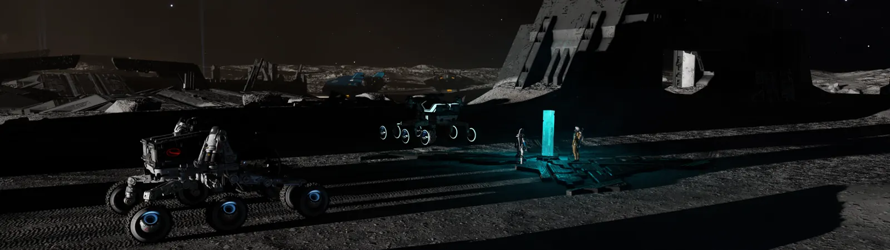

Combat
Conflict Zones, bounty hunting, PvE, PvP, escort work, and organized squad combat.
Recruitment
Recruiting Commanders at all experience levels. Whether you are looking for organized operations, a place to learn, or simply a pack to fly with, there is room to make your mark.
Run With the Pack
The Regiment of Imperial Mongrels is built around cooperation, independence, and a willingness to take on nearly anything the galaxy can throw at us. Our members come from different backgrounds, specialize in different activities, and bring their own style to the squad.
Some Commanders live for combat. Others move freight, mine, explore, colonize, engineer ships, or manage the Background Simulation. Members are encouraged to pursue the parts of Elite Dangerous they enjoy while contributing to squadron goals when they can.

Fly Together
The Mongrels value Commanders who enjoy sharing the galaxy with other people. Sometimes that means a coordinated operation. Sometimes it is an expedition, a field study, a mining run, or simply finding something strange and calling everyone over to see it.
Open play matters to us because cooperation, risk, and the unexpected moments between Commanders are part of what makes the squad worth being in.
Core Expectation
Mongrels are expected to fly in Open. We are a squadron built around teamwork, shared risk, and showing up for one another in the same galaxy as everyone else.
Solo and Private Group play are reserved for limited exceptions rather than normal squad activity. If you join the Mongrels, you should be comfortable operating in Open and contributing as part of the pack.
What We Do
There is no single way to contribute. Squadron operations can span combat, logistics, exploration, colonization, BGS work, and more.
Conflict Zones, bounty hunting, PvE, PvP, escort work, and organized squad combat.
Move cargo, support construction, supply squad objectives, and keep operations moving.
Gather valuable resources for profit, projects, engineering, and squad logistics.
Scout new territory, survey frontier systems, and support expansion beyond the Bubble.
Train with and support the AX Hellhounds when humanity needs experienced anti-xeno pilots.
Shape faction influence, defend Mongrel territory, and help build the squad's frontier network.
Current Needs
Every play style can be useful, but these are the specialties that currently provide the most immediate value to squad operations.
PvE and PvP pilots able to support wars, defense, escorts, and squad combat operations.
Commanders who enjoy moving cargo, supplying projects, supporting carriers, and keeping operations fueled.
Resource gathering for squad projects, trade, engineering, and personal profit.
Scouting, surveying, and frontier support across the Mongrels' expanding territory.
Experienced AX pilots and Commanders interested in learning the skills needed by the Hellhounds.
You do not need a perfect ship, years of experience, or a specialty already chosen. We can help you find your footing.
Before You Apply
The Mongrels are not looking for one specific kind of player. We are looking for Commanders who fit the way the squad operates.
Open play is our standard. Solo and Private Group are limited exceptions.
Be willing to help the squad and other members when operations call for it.
Treat fellow members with respect and contribute to a community people want to be part of.
You do not need to specialize in one activity. Find what you enjoy and make it useful.
What You Can Expect
The goal is a squadron where members can find something worth doing, someone worth flying with, and room to grow.
Take part in BGS operations, wars, trade pushes, colonization, carrier logistics, and other squad goals.
Learn from Commanders with experience in combat, trade, engineering, exploration, AX, and more.
Squad goals matter, but so does enjoying the game. Members still have room to pursue their own adventures.
How to Join
Our recruitment process is currently Discord-first. Join the squad community, introduce yourself, and talk with a Mongrel about what you are looking for in Elite Dangerous.
A dedicated website application form can be added later once member accounts and private tools are introduced.